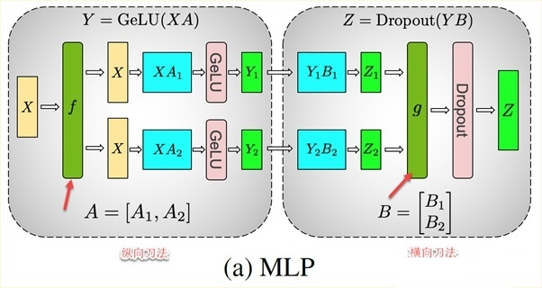

前言
本文思想
multi-node（多机） multi-gpu（多卡）的工作原理和细节
目标
通过对Megatron的学习，期望掌握的是：
- Transformer如何通过multi-node, multi-GPU实现，例如其中的multi-head attention layer, point-wise feed-forward network；
- 如何实现三种并行：数据并行（mini-batch），Tensor并行（把一个张量切成若干部分），和Pipeline并行（把一个网络的多个层进行按层切割），以及这三种并行的综合使用；
- 训练，重训，fine-tuning,多语言扩展等方面的具体的应用。
几个概念
intra-layer model parallel approach和inter-layer model parallel approach的区别。猛一看，这两个的中文翻译都是“层内模型并行方法”。其实它们是有区别的：
inter-layer 并行，对应的是pipeline并行。例如6层CNN网络，前三层给一个GPU，后三层给另外一个GPU。
而另外一个是intra-layer并行，对应的是tensor并行。仍然以6层CNN网络为例，横向切一刀，即一个tensor张量，会被分配到不同的GPU上面。
其实竖向切了一刀vs.横向切了一刀，那么这两个切法，就是正交的（夹角90度）。而且这两个方法可以同时在一个代码中实现，具有互补的关系。

row parallel linear layer
也就是
我们就可以把X1和W1放到一个GPU上；把X2和W2放到另外一个GPU上。它们都计算完毕之后，再相加（一个同步点），然后把相加的结果，回传给这两个GPU（如果有必要的话）。

column parallel linear
也就是
同样的，我们可以把X和W1的乘积运算放一个GPU上；把X和W2的乘积运算放另外一个GPU上。

MLP的多GPU实现
在原始的Transformer中，MLP，即point-wise feed forward sublayer，是包括了两个线性层的，实现了hidden.size -> 4*hidden.size -> hidden.size的这样的变换的神经网络。
如果第一个线性层，使用横刀流，则需要在gelu之前加一个”同步点“（gpu停下手中的计算任务，把数据交换了再说，如果有结束的早的gpu，那就wait到其他的gpu的结果计算出来为止。。。这会导致一定程度的gpu浪费）。
反过来看第一个线性层y=XA，如果使用纵刀流，结果会怎样呢？
鉴于XA1和XA2是通过最后一个维度拼接的，那么我们当然可以先计算gelu(XA1)和gelu(XA2)，然后把gelu(XA1)和gelu(XA2)拼接，这不影响最终的结果。这个就有意思了，可以看到为了计算gelu这个非线性函数，我们不需要设置一个同步点了！
所以，第一层线性层，我们优先选择纵刀流（纵向切割权重A）。
第二个线性层呢？
现在看看，当第一个线性层选了纵刀流的时候，结果就是传递给第二个线性层的X’是已经纵向切割的了，我们当然可以对B继续使用纵刀流，分别对 $XA_1$ 和 $XA_2$ 进行处理，这个时候就需要对 $B$ 切三刀，得到四块了，有些琐碎。还有一个方法，就是对B使用横刀流，这样，可以继续在gpu1上运行 $(XA_1)B_1$，以及在GPU2上运行 $(XA_2)B_2$。只有到最后计算完毕之后，才需要一个同步点，把两个gpu上分别的计算结果加在一起。
所以，第二层线性层，我们优先选择横刀流（横向切割权重$B$）。
因此，总结MLP的多GPU计算如下图所示：

上图中，
- $X$，输入张量，$f$，自定义的激活函数，forward就是identity 函数，即X传播到不同的GPU上面；
- $XA_1$, $XA_2$，即通过对 $A$ 纵向一刀，得到的在两个gpu上运行的结果。当然，如果不是只切一刀，那当然可以使用更多的gpu来分别计算 $XA_1, XA_2, XA_3, XA_4\cdots$；
- $GELU$，非线性激活函数，$Y_1=GeLU(XA_1)；Y_2=GeLU(XA_2)$；
- $Y_1B_1$ 和 $Y_2B_2$，即通过对 $B$ 横向一刀，得到的在两个gpu上运行的结果。当然可以切很多刀，把更小的块，扔给一个个gpu。
- $g$，自定义的激活函数，前向forward的时候，是需要按照最后一个维度把Z1和Z2相加起来，即 $Z=Z_1 + Z_2$，pytorch中的all_reduce函数可以实现这个“归约”操作；
总结上面的切分权值矩阵的方式，如下图所示：
Multi-head self-attention sublayer的实现
分析清楚了MLP的多gpu的实现之后，multi-head self-attention sublayer就相对简单一些了，因为其中的四个线性层，都可以复用已有的column, row parallel linear layers。
上图的左边是通过 $f$，先把 $X$ 分发到多个GPU上（直接copy）。然后每个head相关的三个线性层转换 $Q, K, V$，这三个都是用的“纵刀流linear layer”。在代码中，可以是使用一个 $h$ 到 $3h$ 的linear layer，最后再按照最后一个维度三等分，得到 $Q, K, V$。
之后，计算 $Q^\top_1 K_1$，之后扔给softmax，再给dropout，之后就是 $V_1$ 和这个attention score进行乘积。得到 $Y_1$，再走一个“横刀流”的linear layer。
当然，实际在代码实现的时候，不一定是一个head占一个gpu，也可以是一个gpu上有若干head，然后每个head的hidden.size和gpu中head的数量，合在一起，进行linear layers和multi-head self-attention的计算。